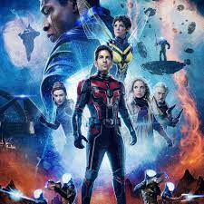
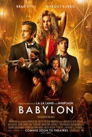

AntMan

Tras ayudar a salvar al mundo en
'Vengadores: Endgame', Ant-Man y
la Avispa vuelven para una tercera
aventura en solitario con este intrigante
título que seguro que esconde muchos secretos
del futuro del UCM. Paul Rudd, Evangeline Lilly,
Michelle Pfeiffer y Michael Douglas
John Wick

Cuesta creer que esta saga empezó
como una película directa a vídeo
que se convirtió poco a poco en un
fenómeno de público que logró incluso
saltar a las salas de cine y marcar
sus propios taquillazos.
En 2023 recibiremos su cuarta entrega
tras el éxito de 'John Wick 3: Parabellum',
Operación fortune

Tras ser pospuesta durante todo 2022,
al fin podremos disfrutar del nuevo
thriller de acción a cargo de Guy Ritchie.
En 'Operación Fortune: el gran engaño'
conoceremos a Orson Fortune (Jason Statham)
y su equipo de agentes trabajando en una misión
encubierta junto a Danny.
Babylon

Aunque todavía sea un misterio,
y eso que se estrena a principios
de año y puede ser candidata a los
Oscars 2023, 'Babylon' será uno de los
próximos grandes estrenos de Hollywood.
Vuelve Damien Chazelle, el oscarizado
director de 'La La Land: La ciudad de
las estrellas', con un viaje al pasado.
Scream 6

Ghostface volverá con una sexta entrega
tan solo un año después del estreno de
su quinta película en este 2022.
¡No hay tiempo que perder! 'Scream 6'
tendrá al trío artístico Radio Silence
a los mandos, con Matt Bettinelli-Olpin
y Tyler Gillett dirigiendo y Chad Villella
como productor ejecutivo.